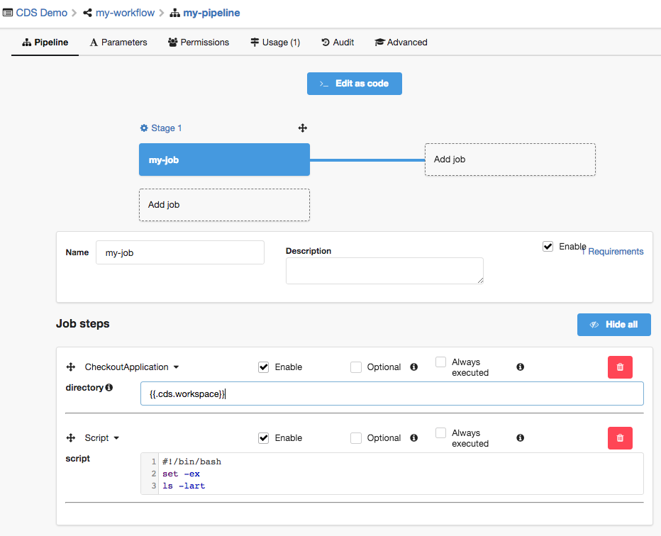

CheckoutApplication
CheckoutApplication is a builtin action, you can’t modify it.
CDS Builtin Action. Checkout a repository into a new directory.
This action use the configuration from application vcs strategy to git clone the repository. The clone will be done with a depth of 50 and with submodules. If you want to modify theses options, you have to use gitClone action.
Parameters
- directory: The name of a directory to clone into.
Requirements
- git: type: binary Value: git
YAML example
Example of a pipeline using CheckoutApplication action:
version: v1.0
name: Pipeline1
stages:
- Stage1
jobs:
- job: Job1
stage: Stage1
steps:
- checkout: '{{.cds.workspace}}'
Example
- Add repository manager on your application.

- Job Configuration.

- Launch workflow, you can select the git branch.

- View logs on job

Notes
This action clones a repository into a directory. If you want to clone a tag from your repository in this way, in your workflow payload you can add a key in your JSON like "git.tag": "0.2".